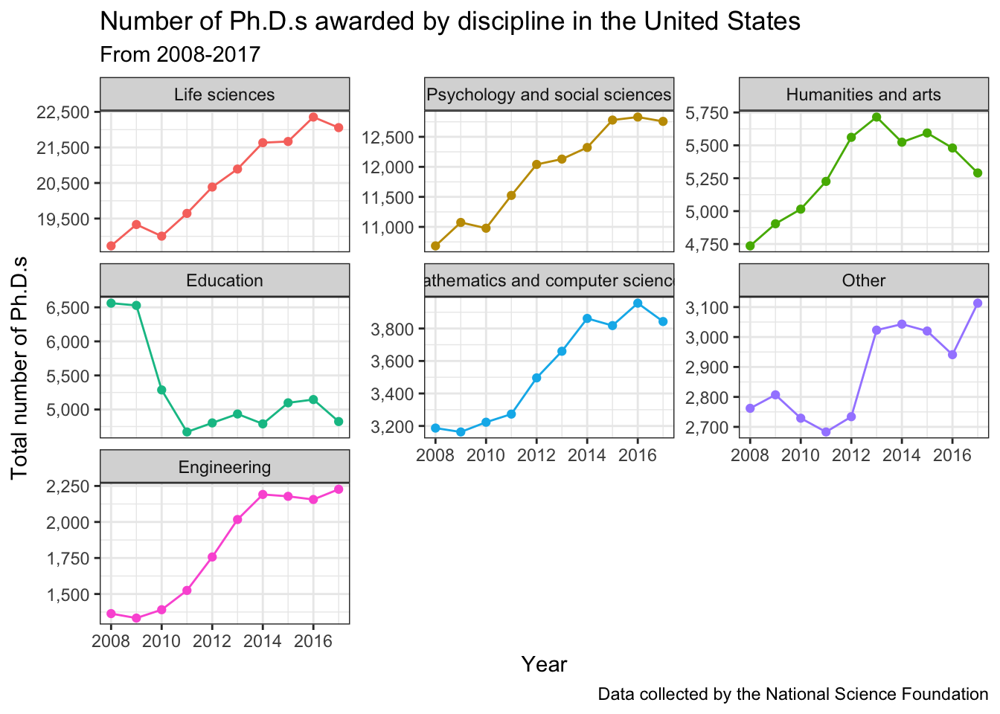
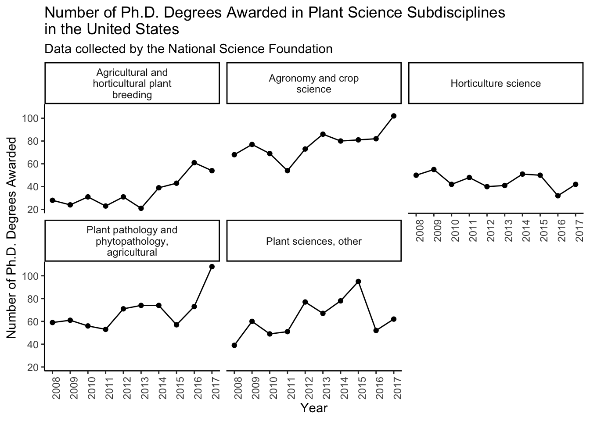

phd_field <- readr::read_csv("https://raw.githubusercontent.com/rfordatascience/tidytuesday/master/data/2019/2019-02-19/phd_by_field.csv")Module 2 Assignment Solutions
Introduction
This is your assignment for Module 2, focused on the material you learned in the lectures and recitation activities on RMarkdown, wrangling, ggplot101, and ggplot102.
You will submit this assignment by uploading a knitted .html to Carmen. Make sure you include the Code Download button, and please show your code within your knitted .html as well. Customize the YAML and the document so you like how it looks.
Remember there are often many ways to reach the same end product.
This assignment will be due on Tuesday, October 1, 2024, at 11:59pm.
Data
The data we will be using is collected by the National Science Foundation about the fields and number of Ph.D. degrees awarded each year.
Take a look at the data collected by NSF on how which fields give PhDs each year, and how many are awarded.
Writing in Markdown 1
Using coding in text, write a sentence in markdown that pulls from this data how many total PhDs were awarded in 2017. If you want to make some calculations in a code chunk first that is ok.
library(tidyverse)
library(scales) # for using comma format Setting as an object the number for the total Ph.D.s earned in 2017.
phds_2017 <- phd_field |>
filter(year == 2017) |>
select(n_phds) |>
colSums(na.rm = TRUE) # calculate a column sumYou could also do it this way:
phd_field |>
filter(year == 2017) |>
summarize(total_phds = sum(n_phds, # sum n_phds
na.rm = TRUE)) # remove missing values# A tibble: 1 × 1
total_phds
<dbl>
1 54110How to write in Markdown:
In 2017, there were were `r format(phds_2017, scientific = F, big.mark = ",")` Ph.D. degrees awarded in the United States.
In 2017, there were were `r phd_field |> filter(year == 2017) |> select(n_phds) |> colSums(na.rm = TRUE) |> format(scientific = F, big.mark = ",")` Ph.D. degrees awarded in the United States.
How this will look when rendered to html:
In 2017, there were 54,110 Ph.D. degrees awarded in the United States.
In 2017, there were 54,110 Ph.D. degrees awarded in the United States.
Visualization 1
Make a chart to visualize of the total number of PhDs awarded for each broad_field across the total time period of this data. You pick the type of chart that you think is appropriate, and make sure your plot is appropriately labelled and you are happy with how it looks. Hint, to do this you’ll probably have to do some data wrangling first.
First I will calculate the total number of Ph.D.s awarded across each broad_field for the whole time period.
broad_field_sum <- phd_field |>
group_by(broad_field) |>
summarize(broad_field_sum = sum(n_phds, na.rm = TRUE)) |>
arrange(-broad_field_sum)
broad_field_sum# A tibble: 7 × 2
broad_field broad_field_sum
<chr> <dbl>
1 Life sciences 205703
2 Psychology and social sciences 119116
3 Humanities and arts 53045
4 Education 52639
5 Mathematics and computer sciences 35481
6 Other 28855
7 Engineering 18139This summary helps me know what to expect to see in my plots. Now I can create some plots.
The first one will just show the total number of Ph.D.s across each broad_field. I decided to put the broad_field on the y-axis so that the labels are easier to read. I’ve also re-ordered broad_field based on the total number of PhDs for each category (i.e., broad_field_sum). I chose to use no colors because I didn’t feel like it was adding much here.
broad_field_sum |>
ggplot(aes(x = broad_field_sum, y = fct_reorder(broad_field, broad_field_sum))) +
geom_col(color = "black", fill = "grey") +
scale_x_continuous(labels = comma) + # add a comma to the x-axis breaks
theme_minimal() +
labs(x = "Total number of Ph.D.s",
y = "", # no label on the y
title = "Number of PhDs awarded across different \nbroad disciplines from 2008-2017",
caption = "Data collected by the National Science Foundation")
The following few examples weren’t exactly the question (which was to show total PhDs across each broad_field across the total time period of this data), but I’ll show you here how to make some other stuff.
broad_field_sumonly_eachyear <- phd_field |>
group_by(year) |>
summarize(all_the_phds = sum(n_phds, na.rm = TRUE))
broad_field_sumonly_eachyear# A tibble: 10 × 2
year all_the_phds
<dbl> <dbl>
1 2008 48026
2 2009 49141
3 2010 47628
4 2011 48546
5 2012 50777
6 2013 52370
7 2014 53364
8 2015 54154
9 2016 54862
10 2017 54110Then we can plot.
broad_field_sumonly_eachyear |>
ggplot(aes(x = year, y = all_the_phds)) +
geom_col(color = "black", fill = "grey") +
scale_y_continuous(labels = comma) + # add a comma to the x-axis breaks
scale_x_continuous(breaks = seq(2008, 2017, 1)) +
theme_minimal() +
labs(x = "Year",
y = "Number of Ph.Ds",
title = "Total number of Ph.D.s awarded in the United States per year from 2008-2017",
caption = "Data collected by the National Science Foundation")This wasn’t exactly the question, but if we want to see a little bit better this over the time period, first we need to create a df that has total PhDs per broad field per year. We can do this by adding year to our group_by() statement.
broad_field_sum_byyear <- phd_field |>
group_by(broad_field, year) |>
summarize(total_phds = sum(n_phds, na.rm = TRUE)) `summarise()` has grouped output by 'broad_field'. You can override using the
`.groups` argument.# what does that look like
head(broad_field_sum_byyear)# A tibble: 6 × 3
# Groups: broad_field [1]
broad_field year total_phds
<chr> <dbl> <dbl>
1 Education 2008 6561
2 Education 2009 6528
3 Education 2010 5287
4 Education 2011 4670
5 Education 2012 4803
6 Education 2013 4934Now we can plot. We can now make different types of plots. Let’s start simpler. Here I’ve re-ordered the legend to be in the same order as the chart so you can see the disciplines that award the most Ph.D.s just by looking at the order of the legend.
broad_field_sum_byyear |>
ggplot(aes(x = year, y = total_phds,
# reorder broad_field by descending total_phds
color = reorder(broad_field, -total_phds))) +
geom_line() +
geom_point() +
scale_x_continuous(breaks = seq(2008, 2017, 2)) +
scale_y_continuous(labels = comma) +
scale_color_brewer(palette = "Set1") +
theme_bw() +
labs(x = "Year",
y = "Total number of Ph.D.s",
color = "Broad Field",
title = "Number of Ph.D.s awarded by discipline in the United States",
subtitle = "From 2008-2017",
caption = "Data collected by the National Science Foundation")Could also try facets.
# re-setting factors of broad_field so that it is re-levelled by the discipline with
# the most phds
# you could also do this manually
broad_field_sum_byyear$broad_field <- fct_reorder(broad_field_sum_byyear$broad_field,
-broad_field_sum_byyear$total_phds)
broad_field_sum_byyear |>
ggplot(aes(x = year, y = total_phds, color = broad_field)) +
geom_line() +
geom_point() +
scale_x_continuous(breaks = seq(2008, 2017, 2)) +
scale_y_continuous(labels = comma) +
facet_wrap(vars(broad_field)) +
theme_bw() +
theme(legend.position = "none") +
labs(x = "Year",
y = "Total number of Ph.D.s",
color = "Broad Field",
title = "Number of Ph.D.s awarded by discipline in the United States",
subtitle = "From 2008-2017",
caption = "Data collected by the National Science Foundation")Can also try with “free_y†axes. You can see the number better but can’t as easily compare between the disciplines.
broad_field_sum_byyear |>
ggplot(aes(x = year, y = total_phds, color = broad_field)) +
geom_line() +
geom_point() +
scale_x_continuous(breaks = seq(2008, 2017, 2)) +
scale_y_continuous(labels = comma) +
facet_wrap(vars(broad_field), scales = "free_y") +
theme_bw() +
theme(legend.position = "none") +
labs(x = "Year",
y = "Total number of Ph.D.s",
color = "Broad Field",
title = "Number of Ph.D.s awarded by discipline in the United States",
subtitle = "From 2008-2017",
caption = "Data collected by the National Science Foundation")
Visualization 2
Pick the field that most closely matches the area of your degree. Make a line graph (with points for each datapoint) that shows how the number of PhDs awarded in your field has changed from 2008 to 2017. Make sure your x-axis indicates each year for which you have data, your graph is appropriately labelled, and you think it is aesthetically pleasing.
# what are the options for broad_field?
phd_field |>
select(broad_field) |>
unique()# A tibble: 7 × 1
broad_field
<chr>
1 Life sciences
2 Mathematics and computer sciences
3 Psychology and social sciences
4 Engineering
5 Education
6 Humanities and arts
7 Other # what are the options for life sciences?
phd_field |>
filter(broad_field == "Life sciences") |>
select(major_field) |>
unique()# A tibble: 6 × 1
major_field
<chr>
1 Agricultural sciences and natural resources
2 Biological and biomedical sciences
3 Health sciences
4 Chemistry
5 Geosciences, atmospheric sciences, and ocean sciences
6 Physics and astronomy # what are the options for Agricultural sciences and natural resources?
phd_field |>
filter(major_field == "Agricultural sciences and natural resources") |>
select(field) |>
unique()# A tibble: 26 × 1
field
<chr>
1 Agricultural economics
2 Agricultural and horticultural plant breeding
3 Agricultural animal breeding
4 Agronomy and crop science
5 Animal nutrition
6 Animal science, poultry or avian
7 Animal sciences, other
8 Environmental science
9 Fishing and fisheries sciences and management
10 Food science
# ℹ 16 more rowsI’m picking “Horticulture science†as my field.
phd_field |>
filter(field == "Horticulture science") |>
ggplot(aes(x = year, y = n_phds)) +
geom_point() +
geom_line() +
scale_x_continuous(breaks = seq(2008, 2017, 1)) +
theme_minimal() +
labs(x = "Year",
y = "Number of Ph.D. Degrees Awarded",
title = "Number of Ph.D. Degrees Awarded in Horticulture Science in the United States",
subtitle = "Data collected by the National Science Foundation")Visualization 3
Pick at least 3 additional fields (you can use more if you like) that are adjacent to your Ph.D. field. Make a faceted plot to show the number of degrees awarded in each of these disciplines across the same time period. Make sure you label your plot appropriately and you think it is aesthetic (i.e., if you have squished strip text you want to fix that).
First I am making a vector of the fields in plant science.
plant_sci <- c("Agricultural and horticultural plant breeding",
"Agronomy and crop science",
"Horticulture science",
"Plant pathology and phytopathology, agricultural",
"Plant sciences, other")Then I can plot. \n adds an automatic line break.
phd_field |>
filter(field %in% plant_sci) |>
ggplot(aes(x = year, y = n_phds)) +
geom_point() +
geom_line() +
scale_x_continuous(breaks = seq(2008, 2017, 1)) +
facet_wrap(vars(field), labeller = label_wrap_gen()) + # wraps labels
theme_classic() +
theme(axis.text.x = element_text(angle = 90)) +
labs(x = "Year",
y = "Number of Ph.D. Degrees Awarded",
title = "Number of Ph.D. Degrees Awarded in Plant Science Subdisciplines \nin the United States",
subtitle = "Data collected by the National Science Foundation")
Or I can make the same style plot but with bars instead of a lines/points.
phd_field |>
filter(field %in% plant_sci) |>
ggplot(aes(x = year, y = n_phds)) +
geom_col() +
scale_x_continuous(breaks = seq(2008, 2017, 1)) +
facet_wrap(vars(field), labeller = label_wrap_gen()) + # wraps labels
theme_classic() +
theme(axis.text.x = element_text(angle = 90)) +
labs(x = "Year",
y = "Number of Ph.D. Degrees Awarded",
title = "Number of Ph.D. Degrees Awarded in Plant Science Subdisciplines \nin the United States",
subtitle = "Data collected by the National Science Foundation")